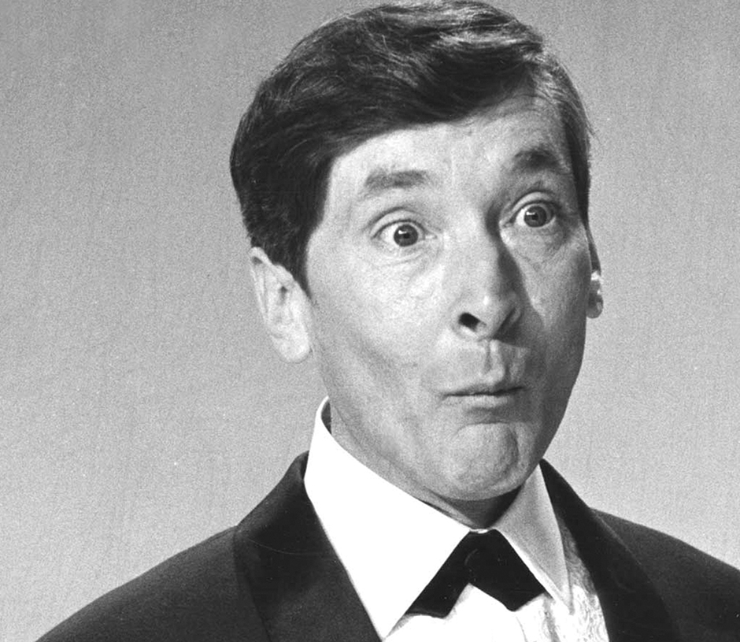
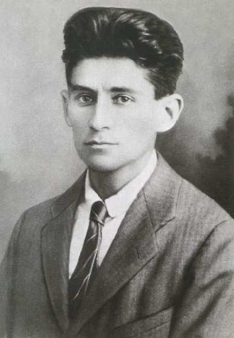

Sunday, January the 6th, 2013
back to: title, date or indexes
How impossible it is for me to make regular entries in the diary. I suddenly remember how I used to puzzle over the word at school. Always wondering why diary was so like Dairy and what the connection was. Never found out. Like that label on the bottle of Daddies sauce—it never stopped. The man on the label was holding a bottle of Daddies sauce and on the label was a man holding a bottle of Daddies sauce . . . ad infinitum ad nauseam for me at any rate.

Thus Kenneth Williams in his diary for this day in 1953. Astute readers will recall that Franz Kafka was also subject to diary-dairy befuddlement—or at least the manufacturers of postcards in his memory were so befuddled. It is unclear why this is connected to the infinite regression of the Daddies Sauce bottle label chap, unless Williams is trying to tell us that he has spent his entire life to date continuing to fret about the connection between diaries and dairies. But then he was a very fretful man, as was Kafka.
